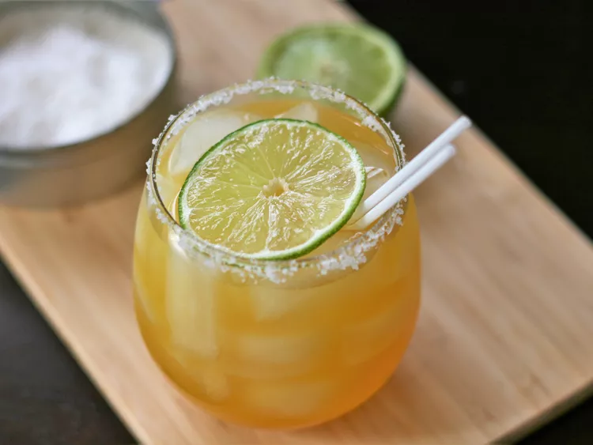

This Passion Fruit Margarita Is the Perfect Poolside Sipper

In this passion fruit margarita, bold tropical flavors take center stage in a twist on a classic margarita. Perfect for
taco night, or relaxing on the patio on a warm day.
- 1 tablespoon coarse salt, or as needed
- 1 lime wedge
- 1 1/2 cups ice, divided, or as needed
- 5 ounces passion fruit juice (such as Goya®)
- 2 fluid ounces silver tequila
- 3/4 fluid ounces triple sec
- 3/4 fluid ounces lime juice
Directions
- Step 1
Sprinkle salt onto a plate. Moisten the rim of a glass with lime wedge and press the
moistened rim into the salt; fill the glass with ice.
- Step 2
Fill a cocktail shaker half-full with ice. Add passion fruit juice, tequila, triple sec,
and lime juice to the shaker. Seal and shake vigorously until outside is frosted, 10 to 15 seconds. Strain mixture
into the glass and stir. Garnish with lime wedge.